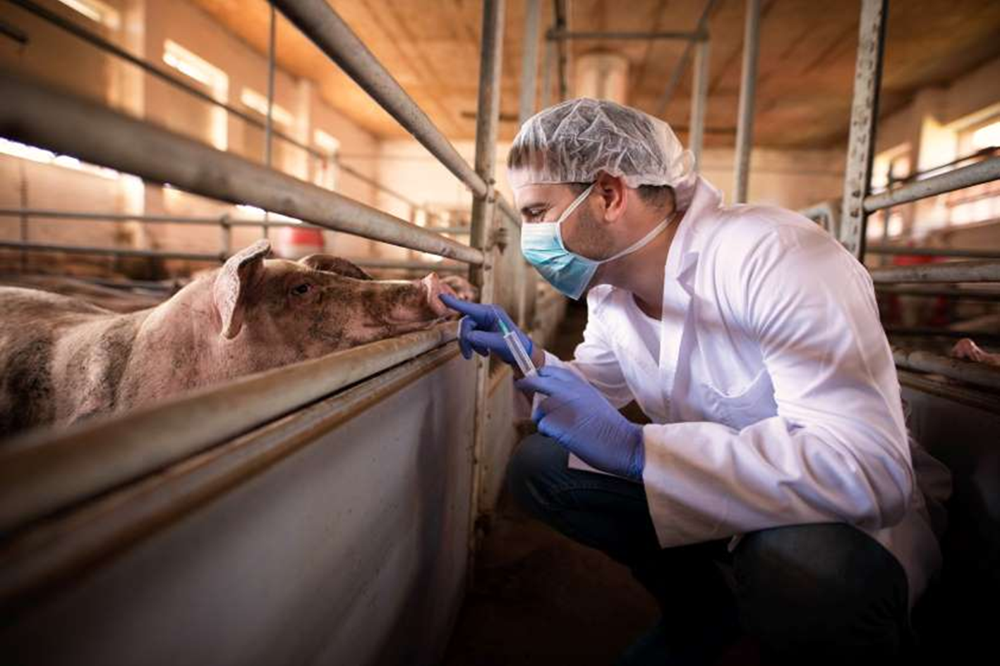
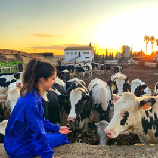
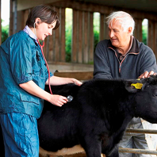
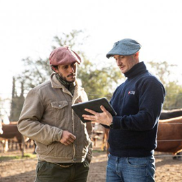
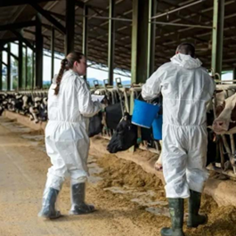
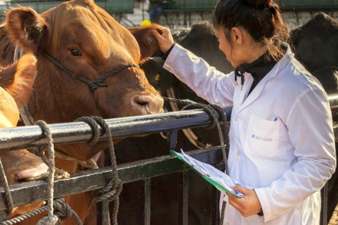

AniTec lets veterinarians follow the animals of the ranchers they add as clients, review clinical history and record visits from their phone.

What the app helps you do in your daily practice.
Review the health records of each animal: vaccines, treatments, diagnoses and follow-ups.
Schedule visits and tasks for your clients.
The records you save are available to the rancher in their own app.
See charts of records by type and by farm for your clients.
Check animals during field visits, even with limited signal.
Add ranchers as clients and open their farms and animals.
See your clients' animals and filter them by client and farm.
Record each consultation: type, description, diagnosis and treatment.
Note the prescription and the follow-up of each health record.
Set the date of the next check and see the pending follow-ups.
Find an animal by scanning its tag or typing its code.
Counters and charts of your clients, patients and records.
Everyday situations where the app makes your work easier.

Before arriving at a farm, you review the history of the animals you are going to see.

You scan the tag of an animal and open its record.

You record the diagnosis and the treatment, and the rancher sees them in their app.

You set the date of the next check and see which follow-ups are pending.

Download the app, choose the veterinarian role and add your first client.
Your session is stored encrypted on your device.